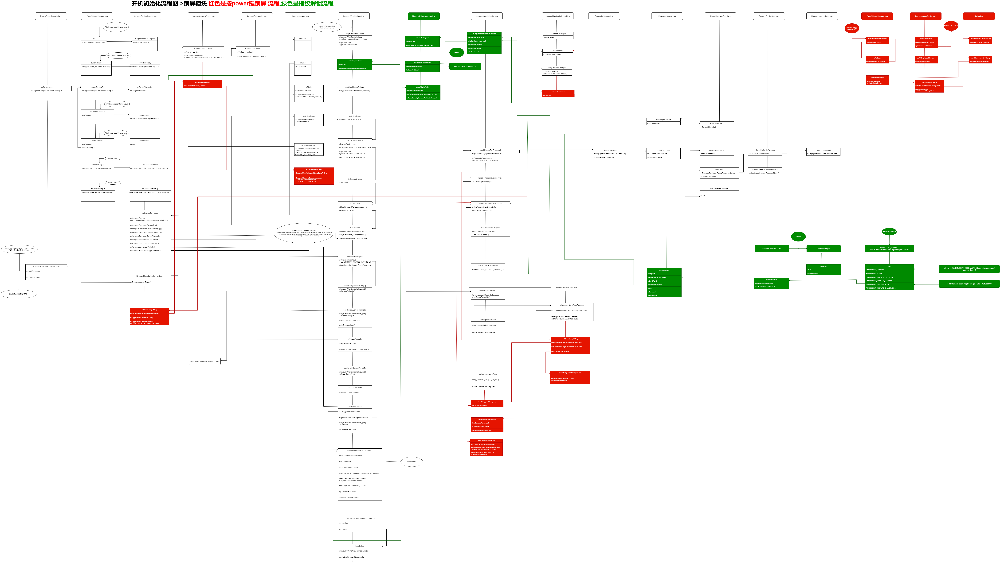

README¶
开机锁屏模块与指纹模块解锁流程
指纹 解锁参考绿色部分¶

息屏指纹解锁流程¶
网上找的一个流程图,感觉这种画程序流程图挺清晰的,后续可以参考
https://blog.csdn.net/forever_2015/article/details/83301652
文章还是写得不错的,值得读一下.记一次息屏指纹解锁性能优化实现
优化息屏指纹解锁思路¶
原来是 authenticated,wakeup,keyguard unlock 串行,时间累加
总体思路,可以分为并行处理以上流程,还有没有给单项都针对性优化
wakeup¶
lcd,tp 之前是创行,但是tp 的resume跟系统亮屏是没有关系的,可以新开线程,resume,优化wake up时间
之前是等待指纹匹配成功,才wakeup系统,可以收到指纹就唤醒系统,但是这个方案,有很多需要细化
拦截背光,不要显示那么快,不然会显示锁屏界面等
keyguard unlock¶
一种方案是,可以灭屏就unlock系统,所以指纹解锁就直接省略了unlock流程
当然,power键,或者其他亮屏事件,需要unlock系统,再亮屏
另外一种方案,hideKeyguardLocked,设置取消动画,设置keyguardWindow为透明
所以,用户就直接看到launcher,看不到动画
authenticated¶
指纹匹配解锁这一块,跟芯片厂算法有关,这一块空间优化不大